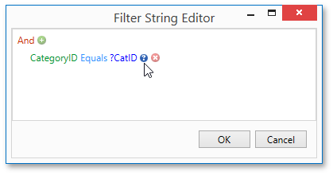
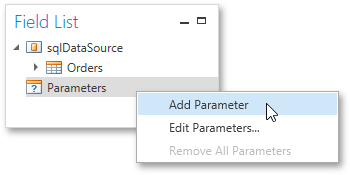
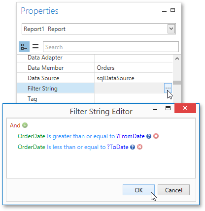
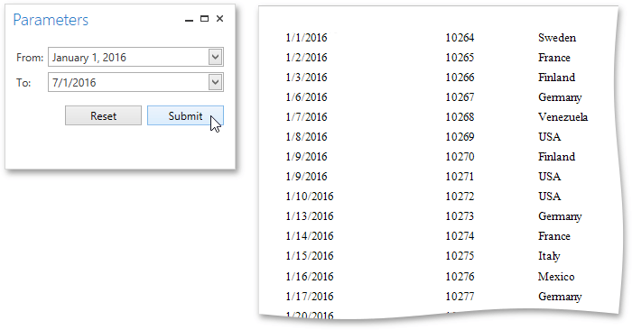

Report Parameters
This document describes the main concepts of using parameters in the Report Designer and provides information on how to create parameters and pass their values.
The document consists of the following sections.
Using Parameters
Report parameters provide the capability to pass data of a certain type to a report and can be used in different ways listed below.
Filtering
You can use a report parameter to filter report data according to the current parameter value by specifying the report's Filter String. For more information, see the Filtering Data topic.

Data Binding
To show a parameter's value in a report, drag the parameter from the Field List panel and drop it onto the required band. This creates a Label bound to the parameter, as with an ordinary data field.

For more information, see the Binding Report Controls to Data topic.
Calculated Fields and Conditional Formatting
Parameters can participate in constructing expressions for calculated fields and formatting rules, as well as standard data fields. The only difference is that a parameter is inserted into the expression's text using the "Parameters." prefix before its name.
Cascading Parameters
You can filter parameter values by specifying the filtering expression that can also include other parameter values. To construct this filtering expression, set the parameter's Look-Up Settings Type property to StaticList or DynamicList and then specify its Filter String property.
Multi-Value Parameters
If a parameter is bound to a collection of standard values, it is possible to store more than one value in it. To do this, enable the parameter's MultiValue property.
Multi-value parameters are useful when you need to filter report data against a list of values. The image below demonstrates a correct filtering expression that incorporates a multi-value parameter.
The following image demonstrates an editor for a multi-value parameter in a Print Preview.
Creating Parameters
To create report parameters, follow the steps below.
Create a new report and bind it to a data source.
In the Field List panel, right-click the Parameters section and in the invoked menu, click Add Parameter.

In the invoked Add New Parameter dialog, set the created parameter's Name and Description properties and make sure to set its Type to an appropriate value. To display this parameter in the Print Preview, enable the Show in the parameters panel option.

To assign a list of values to this report parameter, enable the Supports the collection of standard values option.
In the Dynamic values tab, you can specify a parameter's data source, data member, value member and display member. The value member defines a data field that provides values to the parameter. The display member defines a data field that provides display names for parameter values, i.e., how these values appear in the user interface available in a Print Preview.
In the Static values tab, you can manually fill the list of parameter values. Each parameter value has an individual description specifying how this value appears in the Parameters Panel.

Then, repeat the previous steps to create the second parameter, so that every time your report is previewed, you will be asked to specify two dates.
Next, use parameters to filter your report's data. Select report, and in the Properties Panel, click the ellipsis button for the Filter String property. Then, in the invoked Filter String Editor, construct an expression where a data field is compared with the created parameters. To access parameters, click the icon on the right until it turns into a question mark.

Passing Parameter Values
To view the resulting report in the Report Designer, switch to the Print Preview tab. For a report containing at least one visible parameter, the dedicated Parameters Panel is automatically created in the Preview. This panel provides appropriate editors based on parameter types. To pass parameter values to the report, specify the required values and click Submit.
